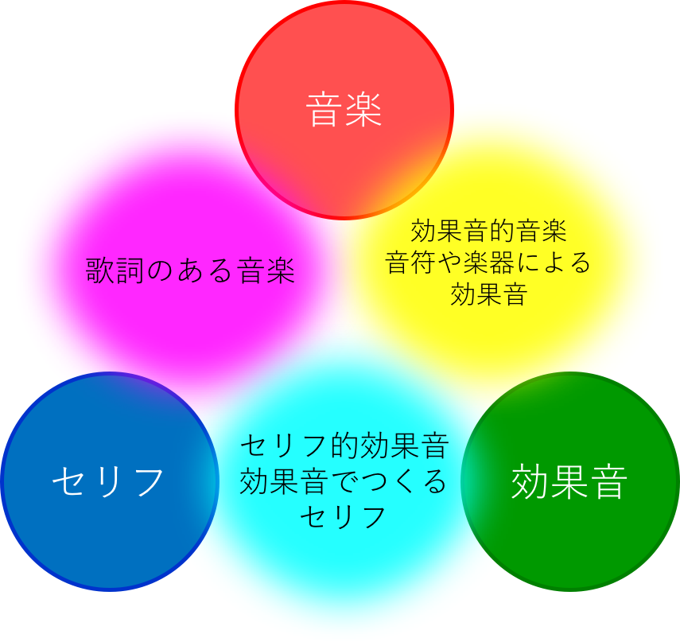

（少々読みにくいですが「エクス・エス・ディー」と呼んでもらえるとうれしいです）
作品制作、基礎資料調査、作品分析、知覚・認知・印象評価実験など、サウンドデザインに関する様々な研究を行います。
音楽もサウンドデザインの一部として捉えますので、音楽にまつわる研究を行いたい学生も受け入れます。
研究活動としては、上記４つのうちから「メイン」「サブ」を最低１つずつ選んで、取り組んでもらいます。
ただし、残念ながら以下の手法をメインとする研究は、exSDでは十分なサポートは出来かねますので、推進には困難を伴うかと思いますが、それでもよろしければ研究室としては受け入れます。
研究の興味・対象として、「アート系音楽作品」「映画音響」「アニメの効果音」「ゲームサウンド」といった「完成品としてのジャンル」は問いません。音による表現を「デザイン」「メディア」という切り口でとらえていきますので、過去の学術の世界であまり扱われてこなかったり、明確な専門用語が無くて説明に困るような対象でも、教員と学生が一緒になって、研究の方法から考えていきます。例として、以下でいえば、セリフ・効果音・音楽の中間領域も全てexSDの研究対象といえます。
上記のように、対象に制限はありませんが、必ず「制作者の立場」でものごとを考え、「表現者」「サウンドデザインをする側」に資する研究を常に意識して研究にあたってもらいます。